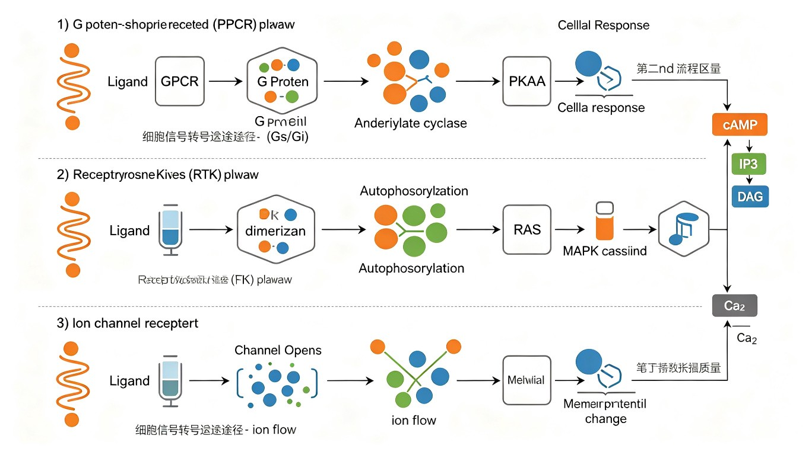

§1 细胞通信的基本概念
细胞通信（cell communication）指一个细胞发出的信息通过介质传递到另一个细胞，产生相应反应的过程。细胞信号转导（signal transduction）则是细胞膜上或胞内的受体识别胞外信号分子，经一系列有序的级联反应（cascade），将信号传入胞内并引起生物学效应的全过程。信号转导是多细胞生物协调生长、分化、代谢、凋亡和免疫的核心机制，是"细胞社会学"的分子基础。
细胞信号转导的基本组成要素：
- 信号分子（第一信使）：胞外的化学或物理信号，如激素、神经递质、生长因子、细胞因子、光、气味分子。
- 受体（receptor）：识别并结合信号分子的蛋白质，是"信号转换器"，将胞外信号转换为胞内信号。
- 转导分子：在胞内传递信号的蛋白质和小分子，包括接头蛋白、G 蛋白、激酶、第二信使等。
- 效应器：产生最终生物学效应的分子，如代谢酶、离子通道、基因转录调节蛋白、细胞骨架蛋白。
- 细胞响应：最终的生物学变化，如代谢改变、基因表达变化、分泌、运动、增殖、分化、凋亡。
信号转导的基本步骤：信号分子 → 受体 → 转导分子（第二信使、激酶）→ 效应器 → 细胞响应。其中受体是关键的"信号转换器"，将胞外信号转换为胞内信号。
细胞通信的 4 种基本方式（必考！）：
- 旁分泌（paracrine）：信号分子（如生长因子 EGF/PDGF、前列腺素、组胺、NO）仅作用于邻近的靶细胞，不进入血液。特点：作用范围小、局部浓度高、时效短。例：组织损伤修复时生长因子作用于附近细胞；炎症时组胺作用于邻近血管内皮。
- 内分泌（endocrine）：内分泌腺细胞分泌激素（如胰岛素、甲状腺素、生长激素、皮质醇）进入血液，经循环运送到远距离靶细胞。特点：作用范围广、浓度低（10⁻⁹~10⁻¹² M）、时效长、起效慢（分-小时）。例：胰岛 β 细胞分泌胰岛素经血液作用于全身。
- 自分泌（autocrine）：细胞分泌的信号分子作用于自身或同类细胞，形成正反馈环路。常见于肿瘤细胞（自分泌生长因子促进自身无限增殖）和免疫细胞（T 细胞分泌 IL-2 促进自身克隆增殖）。
- 突触（synaptic）：神经元通过突触间隙释放神经递质（如乙酰胆碱、谷氨酸、GABA、多巴胺），作用于突触后膜受体。特点：作用极其局限（突触间隙仅 20-40 nm）、快速（毫秒级）、精确，是神经信号传递的特化形式。
此外还有两种补充方式：
- 接触依赖型（contact-dependent）：相邻细胞通过膜表面配体-受体直接接触传递信号，不需要扩散性信号分子。如 Notch-Delta 信号（决定细胞命运、侧向抑制）、免疫系统 MHC-TCR 识别。
- 间隙连接（gap junction）：相邻细胞通过 connexin 蛋白组成的间隙连接通道，小分子（cAMP、IP3、Ca²⁺、ATP，<1000 Da）直接在胞质间流动，实现代谢偶联和电偶联。心肌闰盘的间隙连接使心肌同步收缩。
信号分子的分类（按亲水性 / 亲脂性）——决定受体类型，高频考点：
- 亲水性信号分子：不能直接穿过细胞膜的脂双层，必须与膜受体结合，在膜上启动胞内转导。包括：
- ①肽类和蛋白质激素：胰岛素、胰高血糖素、生长激素（GH）、ACTH、EGF、PDGF、生长抑素；
- ②氨基酸衍生物：肾上腺素、去甲肾上腺素（酪氨酸衍生物）、组胺（组氨酸衍生物）、5-羟色胺/血清素（色氨酸衍生物）；
- ③小分子：NO、CO（气体）、ATP、乙酰胆碱。
- 亲脂性信号分子：可自由穿过细胞膜，与胞内受体（多为核受体）结合。包括：
- ①类固醇激素：糖皮质激素（皮质醇）、盐皮质激素（醛固酮）、性激素（雌激素、孕酮、睾酮）；
- ②甲状腺素（T3/T4，由酪氨酸碘化生成但具亲脂性）；
- ③维甲酸（retinoic acid，维生素 A 衍生物）；
- ④维生素 D3（1,25-(OH)₂-D3）。
口诀："亲水膜、亲脂核"——亲水性信号分子作用于膜受体，亲脂性信号分子作用于核受体。
| 特征 | 亲水性信号分子 | 亲脂性信号分子 |
|---|---|---|
| 代表分子 | 肽类(胰岛素)、氨基酸衍生物(肾上腺素)、NO | 类固醇(皮质醇/性激素)、甲状腺素、维甲酸、VitD3 |
| 过膜能力 | 不能过膜 | 可自由过膜 |
| 受体位置 | 膜受体 | 胞内受体(核受体) |
| 受体类型 | 离子通道/GPCR/酶联受体 | 配体依赖性转录因子 |
| 转导机制 | 第二信使+激酶级联 | 直接调控基因转录 |
| 反应速度 | 快(秒-分) | 慢(小时-天) |
| 效应特点 | 快速可逆 | 持久稳定 |
受体的三大类（按结构与转导机制）——必考分类：
- 离子通道偶联受体（ion channel-linked receptor / 递质门控离子通道）：自身就是离子通道，配体结合后通道开放或关闭，引起离子跨膜流动，改变膜电位。多见于突触传递。
- nAChR（烟碱型乙酰胆碱受体）：阳离子通道（Na⁺内流为主），引起突触后膜去极化；
- GABA_A 受体：Cl⁻通道，Cl⁻内流引起超极化（抑制）；
- NMDA 受体：Ca²⁺和 Na⁺通道，参与学习记忆（Ca²⁺内流）；
- 甘氨酸受体、5-HT3 受体等。
- G 蛋白偶联受体（GPCR）：7 次跨膜（7-TM），通过异三聚体 G 蛋白转导信号。是最大的受体超家族（人类约 800 个），介导绝大多数激素、神经递质、趋化因子和感觉信号。详见 §2。
- 酶联受体（enzyme-linked receptor / 催化受体）：单次跨膜（1-TM），胞内结构域具酶活性（多为激酶）。包括：
- 受体酪氨酸激酶（RTK）：EGF受体、胰岛素受体、PDGF受体（详见 §3）；
- 受体丝氨酸/苏氨酸激酶：TGF-β 受体（详见 §4）；
- 受体鸟苷酸环化酶：心钠肽（ANP）受体，自身催化 GTP→cGMP；
- 受体酪氨酸磷酸酶：如 CD45（免疫细胞）；
- 相关激酶受体（无内源激酶活性但偶联激酶）：如细胞因子受体偶联 JAK（详见 §4 JAK-STAT）。
胞内受体（核受体）——介导亲脂性信号的通路（补充，必考）：亲脂性信号分子（类固醇激素、甲状腺素、维甲酸、维生素 D3）穿过细胞膜后，与胞内受体结合。核受体是配体依赖性转录因子，本身即为转录因子，直接调控基因表达。
- Ⅰ型核受体（胞质型）：未结合配体时与 HSP90 等伴侣蛋白结合存在于胞质。配体（如糖皮质激素、盐皮质激素、雄激素、孕酮、雌激素）结合后，受体与 HSP90 解离、二聚化、暴露核定位信号（NLS）、入核→结合激素反应元件（HRE）→调节靶基因转录。
- Ⅱ型核受体（核内型）：始终位于核内，与视黄酸 X 受体（RXR）形成异二聚体结合于 DNA。配体（如甲状腺素 T3、维甲酸、维生素 D3）结合后，解除与共抑制因子（NCoR/SMRT）的结合，招募共激活因子（SRC-1、CBP/p300）→激活转录。
- 典型核受体：糖皮质激素受体（GR）、雌激素受体（ER）、雄激素受体（AR）、甲状腺素受体（TR）、维甲酸受体（RAR）、维生素 D 受体（VDR）、PPAR（过氧化物酶体增殖物激活受体）。
- 特点：反应慢（需经转录-翻译-蛋白合成，小时-天），作用持久，可被放线菌素 D（抑制转录）或放线菌酮（抑制翻译）阻断——这是核受体与膜受体通路的重要鉴别实验。
膜受体 vs 核受体通路对比（鉴别实验）：膜受体通路（亲水性信号，如肾上腺素）反应快（秒-分），不被放线菌素 D/放线菌酮阻断；核受体通路（亲脂性信号，如皮质醇）反应慢（小时-天），被放线菌素 D（转录抑制剂）或放线菌酮（翻译抑制剂）阻断。

§2 G 蛋白偶联受体（GPCR）介导的信号通路
G 蛋白偶联受体（G protein-coupled receptor, GPCR）是真核生物中最大的细胞膜受体超家族。人类基因组中约有 800 多个 GPCR 基因，其中约一半是嗅觉受体。GPCR 介导绝大多数激素、神经递质、趋化因子和感觉信号（光、味、嗅）的转导，是现代药物最重要的靶点——约 1/3 的上市药物靶向 GPCR（如 β-受体阻滞剂、抗组胺药、阿片类镇痛药）。
GPCR 的结构特征（必考！）：
- 7 次跨膜 α 螺旋（7-transmembrane, 7-TM）：肽链来回穿过脂双层 7 次，形成 7 个疏水跨膜区段（TM1-TM7，每个约 20-25 个疏水氨基酸），由 3 个胞外环（ECL1-3）和 3 个胞内环（ICL1-3）连接。
- N 端在胞外（参与配体识别，长度变化大），C 端在胞内（与 G 蛋白作用、可被 GRK 磷酸化介导脱敏）。
- 第 3 个胞内环（ICL3）和 C 端是与异三聚体 G 蛋白 α 亚基结合的关键区域。
- 配体结合位点因受体而异：小分子配体（如肾上腺素）结合跨膜区形成的口袋；肽类配体结合胞外环和 N 端；大蛋白配体结合 N 端的长结构域。
- 研究最透彻的 GPCR 模型：视紫红质（rhodopsin，光感受器）和 β2-肾上腺素受体。
GPCR 家族分类（按序列同源性，5 大家族）：
- Rhodopsin 家族（A 族）：最大，含大多数激素和神经递质受体（β-肾上腺素、毒蕈碱、视紫红质、阿片受体）。
- Secretin 家族（B 族）：分泌素、胰高血糖素、PTH、降钙素受体。
- Glutamate 家族（C 族）：代谢型谷氨酸受体、GABA_B 受体、味觉受体（T1R/T2R）。
- Adhesion 家族：N 端很长，含多种结构域，参与细胞黏附。
- Frizzled 家族：Wnt 受体（详见 §4 Wnt 通路）。
异三聚体 G 蛋白（heterotrimeric G protein）——GPCR 的"分子开关"：由 α、β、γ 三个亚基组成，锚定在质膜内侧（通过豆蔻酰化、棕榈酰化、异戊二烯化等脂修饰）。
- α 亚基：具 GTPase 活性，是分子开关的核心，决定 G 蛋白类型和下游通路。
- 结合 GDP 时，与 βγ 紧密结合形成三聚体（失活态）；
- 配体激活 GPCR 后，GPCR 作为 GEF（鸟苷酸交换因子）促使 α 亚基释放 GDP、结合 GTP；
- α-GTP 构象改变，与 βγ 解离（活化态）；
- α-GTP 和 βγ 分别激活下游效应器；
- α 亚基内在 GTPase 水解 GTP→GDP 后，α-GDP 重新与 βγ 结合，回到失活态，信号终止。
- βγ 二聚体：稳定 α 亚基（失活态），解离后也可直接调节某些效应器（如 GIRK 钾通道、PLCβ、AC、PI3Kγ）。
- RGS 蛋白（regulator of G protein signaling）：是 Gα 的 GAP，加速 GTP 水解，终止信号。
根据 α 亚基分类的三大类 G 蛋白及其通路（核心考点）：
① Gs 通路——激活 AC，cAMP↑
Gs（stimulatory，激活型）→ 激活腺苷酸环化酶（AC, adenylyl cyclase）→ 催化 ATP → cAMP↑ → 激活PKA（蛋白激酶 A，cAMP 依赖性蛋白激酶）→ 磷酸化靶蛋白。
- 典型配体：胰高血糖素、β-肾上腺素受体（β1 心肌、β2 支气管平滑肌、β3 脂肪）、ACTH、TSH、FSH、LH。
- PKA 磷酸化靶蛋白举例：磷酸化酶激酶（b→a 活化）→糖原磷酸化酶→糖原分解↑；同时 PKA 磷酸化糖原合酶（a→b 失活）→糖原合成↓。这是肾上腺素/胰高血糖素调节血糖的经典级联。
- PKA 还可入核磷酸化转录因子 CREB（cAMP response element-binding protein）→结合 CRE（cAMP 反应元件）→调节基因转录（如诱导糖异生酶）。
- 心肌中 PKA 磷酸化 L 型 Ca²⁺通道和受磷蛋白（phospholamban）→心肌收缩力↑（正性肌力作用）。
② Gi 通路——抑制 AC，cAMP↓
Gi（inhibitory，抑制型）→ 抑制 AC → cAMP↓ → PKA 活性↓。
- 典型配体：α2-肾上腺素受体（突触前膜，抑制去甲肾上腺素进一步释放）、毒蕈碱型乙酰胆碱受体 M2/M4（心肌，减慢心率）、生长抑素、阿片受体、多巴胺 D2 受体。
- α2 受体被去甲肾上腺素激活时，通过 Gi 抑制 AC，与 β 受体（Gs）的作用相互拮抗，精细调节细胞反应。
- Gi 的 βγ 亚基也可直接激活 GIRK 钾通道（G 蛋白偶联内向整流钾通道），使 K⁺外流，细胞超极化，减慢心率（这是迷走神经 M2 受体减慢心率的机制之一）。
③ Gq 通路——激活 PLC，IP3/DAG 双信使系统
Gq→ 激活磷脂酶 Cβ（PLCβ, phospholipase Cβ）→ 水解膜磷脂 PIP2（磷脂酰肌醇 4,5-二磷酸）→ 产生两个第二信使：IP3（1,4,5-三磷酸肌醇）和 DAG（二酰甘油）。
- IP3 通路：IP3 是水溶性小分子，扩散到内质网（ER）膜，与 IP3 受体（IP3R，即 IP3 门控 Ca²⁺通道）结合 → 开放 ER 膜 Ca²⁺通道 → 胞内 Ca²⁺↑ → Ca²⁺与钙调蛋白（calmodulin, CaM）结合 → 激活CaM 依赖性激酶（CaMKII）、肌球蛋白轻链激酶（MLCK，平滑肌收缩）、钙调神经磷酸酶（CaN）等。
- DAG 通路：DAG 是脂溶性分子，留在质膜上，与磷脂酰丝氨酸（PS）和 Ca²⁺协同激活蛋白激酶 C（PKC）→ 磷酸化靶蛋白，调节细胞增殖、分化、分泌。
典型 Gq 偶联受体：α1-肾上腺素受体（血管平滑肌收缩）、M1/M3/M5 毒蕈碱受体（M3 介导腺体分泌、平滑肌收缩）、5-HT2、缓激肽受体、组胺 H1 受体、内皮素受体。
G 蛋白三大类比较表：
| G 蛋白 | α 亚基 | 效应器 | 第二信使 | 主要激酶 | 典型受体 |
|---|---|---|---|---|---|
| Gs | αs | 激活 AC(腺苷酸环化酶) | cAMP ↑ | PKA | β-肾上腺素、胰高血糖素、ACTH |
| Gi | αi | 抑制 AC; βγ 激活 GIRK | cAMP ↓; K⁺外流 | PKA ↓ | α2-肾上腺素、M2 毒蕈碱、生长抑素 |
| Gq | αq/α11 | 激活 PLCβ | IP3, DAG, Ca²⁺ | PKC, CaMKII | α1-肾上腺素、M1/M3、5-HT2 |
| Gt(转导蛋白) | αt | 激活 PDE6(视网膜) | cGMP ↓ | (通道关闭) | 视紫红质(光感受) |
| G12/13 | α12/α13 | 激活 RhoGEF→Rho | 无 | ROCK | 血栓素、溶血磷脂酸受体 |
GPCR 的脱敏（desensitization）与内吞——信号终止机制：持续刺激下 GPCR 反应减弱甚至消失，称为脱敏，是细胞适应的重要机制，分两步：
- 同源脱敏（homologous desensitization）：G 蛋白偶联受体激酶（GRK，家族含 GRK1-7）特异性磷酸化被配体占据的活化 GPCR的 C 端 Ser/Thr → β-arrestin（β-抑制蛋白，含 arrestin2/3）结合磷酸化的受体 → 阻断 GPCR 与 G 蛋白的相互作用（脱敏，因为 β-arrestin 占据了 G 蛋白结合位点）。
- 受体内吞（internalization）：β-arrestin 招募网格蛋白（clathrin）、AP2 衔接蛋白和发动蛋白（dynamin）→ 受体-配体复合物通过网格蛋白依赖性内吞进入胞内 → 形成内体（endosome）。受体命运：①被分选到溶酶体降解（下调，downregulation）；②去磷酸化后回收再循环到膜上（resensitization，复敏）。
- 异源脱敏（heterologous desensitization）：由 PKA、PKC 等激酶磷酸化非活化的（未被配体占据的）GPCR，可交叉调节不同受体，介导通路间的 crosstalk。
cAMP 的降解：磷酸二酯酶（PDE, phosphodiesterase）水解 cAMP→5'-AMP，使信号终止。咖啡因、茶碱是 PDE 抑制剂，使 cAMP 升高（这是咖啡因提神的机制之一）。PDE 家族有 11 种（PDE1-11），不同亚型分布于不同组织。
§3 受体酪氨酸激酶（RTK）介导的信号通路
受体酪氨酸激酶（receptor tyrosine kinase, RTK）是酶联受体的最大一类，单次跨膜，胞内段具酪氨酸激酶活性。RTK 调控细胞生长、分化、存活、代谢，其异常激活与肿瘤密切相关（约 30% 的人类癌症涉及 RTK 通路异常）。人类基因组编码约 58 个 RTK，分为约 20 个亚家族。
RTK 的结构与激活机制：
- 结构：单次跨膜（1-TM），含 N 端胞外配体结合域 + 一个疏水跨膜 α 螺旋 + 胞内酪氨酸激酶结构域（含激酶催化区 + juxtamembrane 调节区 + C 端多个 Tyr 磷酸化位点）。
- 激活机制（4 步）：
- 配体（如 EGF、PDGF）结合胞外域；
- 受体二聚化（dimerization）——两个受体单体形成同源或异源二聚体；
- 二聚体内两个单体的激酶结构域相互反式自磷酸化（trans-autophosphorylation）——即在激酶活化环和 C 端的特定 Tyr 上相互加磷酸基团；
- 磷酸化的 Tyr 成为下游信号分子的"停靠位点（docking site）"，招募含 SH2（Src homology 2）或 PTB（phospho-tyrosine binding）结构域的接头蛋白和效应器，组装信号复合物。
典型 RTK 配体：EGF（表皮生长因子）、PDGF（血小板源生长因子）、FGF（成纤维细胞生长因子）、VEGF（血管内皮生长因子）、NGF（神经生长因子）、胰岛素。
RTK 下游的两条主要通路：
① Ras-MAPK 级联通路（必背顺序 Ras→Raf→MEK→ERK！）
这是 RTK 最经典的下游通路，介导细胞增殖与分化信号。MAPK（mitogen-activated protein kinase）级联是真核细胞最保守的信号模块之一。
- Grb2（生长因子受体结合蛋白 2，接头蛋白）：含 1 个 SH2 + 2 个 SH3 结构域。SH2 结合磷酸化的 RTK；SH3 结合 SOS（son of sevenless，鸟苷酸交换因子 GEF）。
- SOS 催化 Ras（小 G 蛋白，单体 GTPase 超家族，锚定在膜上）的 GDP→GTP 交换，Ras-GTP 活化。
- Ras-GTP 招募并激活 Raf（MAPKKK，丝氨酸/苏氨酸激酶）→ Raf 磷酸化激活 MEK（MAPKK，MAPK/ERK kinase）→ MEK 磷酸化激活 ERK（MAPK，即 ERK1/2）。
- ERK 入核磷酸化转录因子 Elk-1、c-Myc、c-Fos → 调节细胞周期基因（如 cyclin D1）→ 促进细胞增殖。
- 三级级联（three-tiered cascade）：Raf→MEK→ERK 称为 MAPK 三级激酶级联，每步都放大信号（激酶-激酶-激酶）。
- MEK 是唯一的双特异性激酶：同时磷酸化 ERK 的 Thr 和 Tyr（Thr-Glu-Tyr 基序），这是 ERK 激活所必需。
Ras 的负调控：Ras 的 GTPase 活性（水解 GTP→GDP 而失活）被 GAP（GTPase activating protein，如 NF1/neurofibromin）加速。Ras 基因突变（如 G12V、G13D、Q61R）使 GTPase 失活→Ras 持续结合 GTP→持续激活 MAPK→肿瘤（约 30% 人类癌症有 Ras 突变，胰腺癌中 K-Ras 突变率高达 90%）。
② PI3K-Akt 通路——促存活（生存通路）
PI3K-Akt 是 RTK 介导细胞存活、抗凋亡和代谢调控的核心通路，被称为"生存通路"。
- PI3K（磷脂酰肌醇 3-激酶，phosphoinositide 3-kinase）：催化膜脂 PIP2→PIP3（在肌醇环 3 位加磷酸）。PI3K 的 p85 调节亚基含 SH2，结合磷酸化的 RTK；p110 催化亚基具激酶活性。
- PIP3（第二信使）招募含 PH（pleckstrin homology）结构域的 Akt/PKB（蛋白激酶 B）和 PDK1 到膜上，PDK1 磷酸化 Akt 的 Thr308，mTORC2 磷酸化 Ser473，完全激活 Akt。
- Akt 促存活的多种机制（抗凋亡）：
- 磷酸化 Bad（Ser136），使其被 14-3-3 蛋白隔离，释放 Bcl-2/Bcl-xL 发挥抗凋亡作用；
- 磷酸化并抑制 caspase-9（直接抑制凋亡执行）；
- 磷酸化 FOXO1/3（FKHR）转录因子，使其出核被降解，阻止促凋亡基因（如 Bim、FasL）表达；
- 激活 mTORC1（通过抑制 TSC1/2），促蛋白合成、细胞生长；
- 磷酸化并抑制 GSK-3β，稳定 β-catenin、促进糖原合成。
- PTEN（磷酸酶张力蛋白同源物）是负调控因子，将 PIP3→PIP2（去 3 位磷酸），抑制该通路。PTEN 是重要抑癌基因，其缺失/突变导致 PIP3 积累、Akt 持续活化→肿瘤（如 Cowden 综合征、多种晚期癌）。
③ 胰岛素受体通路（特殊的 RTK）
胰岛素受体（insulin receptor, IR）是特殊的 RTK：在未结合配体时已是预先二聚化的异四聚体（α2β2，由二硫键连接），不需要配体诱导二聚化（这是与其他 RTK 的关键区别）。胰岛素结合后，β 亚基自磷酸化，但胰岛素受体通过IRS-1（胰岛素受体底物-1）这一特殊接头蛋白转导信号。
- 胰岛素→IR 自磷酸化（β 亚基 Tyr 自磷酸化）→磷酸化 IRS-1（多个 Tyr 位点，IRS-1 含 PTB 结构域结合 IR 的 NPXY 基序）→IRS-1 招募 PI3K→PIP3→Akt→
- ①促进 GLUT4（葡萄糖转运蛋白 4）从胞内囊泡转位到细胞膜→葡萄糖摄取↑（骨骼肌、脂肪细胞）；
- ②磷酸化抑制 GSK-3β→激活糖原合酶（GS）→糖原合成↑；
- ③抑制糖异生（抑制 PEPCK、G6Pase 表达）；
- ④激活 mTOR→蛋白合成↑。
- IRS-1 还可经 Grb2-SOS→Ras-MAPK 通路促进细胞生长。
- 2 型糖尿病的本质是胰岛素抵抗（insulin resistance）：炎症因子（TNF-α、游离脂肪酸）激活 JNK、IKK→IRS-1 丝氨酸磷酸化（Ser307 等）→抑制其酪氨酸磷酸化→阻断信号转导→GLUT4 转位障碍→血糖升高。
§4 其他信号通路（JAK-STAT、TGF-β、Wnt、Hedgehog、NF-κB）
① JAK-STAT 通路——细胞因子受体的直接转录通路
- 细胞因子受体（cytokine receptor）本身没有内源激酶活性（区别于 RTK），但胞内段紧密结合JAK（Janus kinase，非受体型酪氨酸激酶）。JAK 家族：JAK1、JAK2、JAK3、TYK2。
- 机制：配体（如生长激素 GH、干扰素 IFN-α/β/γ、白细胞介素 IL-2/IL-6、红细胞生成素 EPO、粒细胞集落刺激因子 G-CSF）→受体二聚化→结合的 JAK 相互磷酸化活化→JAK 磷酸化受体胞内段的 Tyr→招募含 SH2 的 STAT（signal transducer and activator of transcription）→JAK 磷酸化 STAT 的 Tyr→STAT 通过 SH2 域同源/异源二聚化→二聚体入核→结合靶基因启动子的 GAS（γ-activation sequence）元件→调节基因转录。
- STAT 家族：STAT1-7，不同细胞因子激活不同 STAT。如 IFN-γ→STAT1 同源二聚体；IFN-α/β→STAT1-STAT2 异源二聚体（+IRF9 形成 ISGF3）；IL-6→STAT3；GH、EPO→STAT5；IL-4→STAT6。
- 特点：通路最短（直接从膜到核，无第二信使），反应较快，是"最直接"的转录调控通路。
- 负调控：SOCS（suppressor of cytokine signaling）蛋白（被 STAT 诱导表达，负反馈抑制 JAK）和 PIAS（protein inhibitor of activated STAT）抑制 JAK-STAT。
② TGF-β/Smad 通路——受体丝氨酸/苏氨酸激酶
- TGF-β 受体是受体丝氨酸/苏氨酸激酶（区别于 RTK 的酪氨酸激酶），分 I 型（type I）和 II 型（type II），均为单次跨膜。
- 机制：TGF-β 先结合 II 型受体（具组成型激酶活性）→招募并磷酸化 I 型受体（GS 结构域 Ser/Thr 磷酸化而激活）→I 型受体磷酸化下游 Smad2/Smad3（R-Smad, receptor-regulated Smad，C 端 SSXS 基序磷酸化）→磷酸化的 Smad2/3 与共同介体 Smad4（co-Smad, common mediator）结合形成异源三聚体→入核→与转录因子（如 FoxH1）协同调节靶基因（如 p15、p21 抑癌；c-Myc 下调）。
- Smad 分类：
- R-Smad（受体调节型）：Smad1/2/3/5/8，被受体磷酸化（Smad2/3 应答 TGF-β/activin/nodal；Smad1/5/8 应答 BMP）；
- Co-Smad（共同介质）：Smad4，与 R-Smad 结合成复合物入核；
- I-Smad（抑制型）：Smad6/7，与受体结合阻止 R-Smad 磷酸化，负调控。
- TGF-β 功能：①抑制大多数上皮细胞增殖（抑癌）；②促进细胞外基质（胶原）合成（纤维化）；③免疫抑制；④上皮-间质转化（EMT，肿瘤晚期促转移——TGF-β 的"双刃剑"特性）。
③ Wnt/β-catenin 通路——发育与肿瘤的经典通路
- 无 Wnt 时（静息态）：β-catenin 被"破坏复合体（destruction complex）"——含 APC（adenomatous polyposis coli）、Axin、GSK-3β、CK1——磷酸化（CK1 先磷酸化 Ser45，GSK-3β 再磷酸化 Ser33/37/Thr41）→被 β-TrCP 识别→泛素化→蛋白酶体降解。胞质游离 β-catenin 维持低水平，核内 TCF/LEF 转录因子与抑制蛋白 Groucho 结合，靶基因（c-Myc、cyclin D1）关闭。
- 有 Wnt 时（激活态）：Wnt 结合 Frizzled 受体（7-TM，类 GPCR）和 LRP5/6 辅助受体→招募 Dvl（Dishevelled）→Dvl 与 Axin 结合使破坏复合体解聚/抑制 GSK-3β→β-catenin不被降解而稳定积累→入核→取代 Groucho，与 TCF/LEF 结合→激活靶基因（c-Myc、cyclin D1、axin2）→促增殖。
- Wnt 在胚胎发育中决定细胞命运和体轴形成（如前后轴、肢芽发育）。
- APC 基因突变（破坏复合体失活→β-catenin 持续积累）是家族性腺瘤性息肉病（FAP）和散发性结肠癌的驱动事件——这是 Wnt 通路与肿瘤的经典关联。
④ Hedgehog（Hh）通路
- 无 Hh 时：Patched（Ptch，12 次跨膜）抑制 Smoothened（Smo，7-TM，类 GPCR）；下游转录因子 Gli（Gli1/2/3）被 PKA、GSK-3β、CK1 磷酸化后部分蛋白酶体降解为抑制型（GliR，Gli3 为主），抑制靶基因。
- 有 Hh 时：Hh 结合 Ptch→Ptch 内吞降解，解除对 Smo 的抑制→Smo 活化（磷酸化并聚集于初级纤毛）→Gli 转化为激活型（GliA，Gli2 为主）→入核激活靶基因（Wnt、cyclin D、Bcl-2、Patched1 负反馈）。
- Hh 在胚胎发育中决定细胞命运（神经管腹侧 patterning、肢体发育），初级纤毛是 Hh 信号转导的关键场所。
- 异常激活导致肿瘤：基底细胞癌（BCC，最常见）、髓母细胞瘤。Smo 抑制剂 vismodegib 用于治疗晚期 BCC。
⑤ NF-κB 通路——炎症与免疫的核心通路
- 静息时：NF-κB（最常见 p65/p50 异二聚体）在胞质中被抑制蛋白 IκB（inhibitor of κB，含 IκBα/β/ε）结合，遮蔽核定位信号（NLS），滞留胞质无活性。
- 激活时：炎症信号（TNF-α、IL-1、细菌 LPS 经 TLR、病毒、紫外线、活性氧 ROS）→激活 IKK（IκB kinase）复合体（含 IKKα、IKKβ、调节亚基 IKKγ/NEMO）→IKK 磷酸化 IκB（Ser32/36）→IκB 被 β-TrCP 识别→泛素化→蛋白酶体降解→释放 NF-κB→NF-κB 暴露 NLS→入核→激活靶基因：促炎因子（TNF-α、IL-1、IL-6）、COX-2、iNOS、趋化因子、抗凋亡基因（Bcl-xL、c-IAP、FLIP）。
- 功能：炎症反应、免疫细胞活化、抗凋亡、细胞存活。慢性炎症中 NF-κB 持续激活促肿瘤（炎症-癌变链接）。
- 糖皮质激素的抗炎机制之一：诱导 IκBα 表达，抑制 NF-κB；环孢素/他克莫司通过抑制 calcineurin-NFAT 通路发挥免疫抑制（与 NF-κB 相关但不同）。
§5 第二信使系统
第二信使（second messenger）是受体激活后在胞内产生的小分子物质，浓度短暂升高，将胞外信号放大并传递给胞内效应器（主要是蛋白激酶）。第一信使是胞外的信号分子（激素、神经递质等）。第二信使的概念由 Sutherland 提出（因发现 cAMP 获 1971 年诺贝尔生理学或医学奖）。
第二信使的共同特点：①小分子（<1000 Da）；②胞内浓度受信号调控而快速变化（升高/降低）；③半衰期短，可快速降解/清除；④通过激活下游效应器（激酶、离子通道）发挥作用；⑤可被级联放大。
① cAMP 系统
- 合成：腺苷酸环化酶（AC, adenylyl cyclase，12 次跨膜）催化 ATP→cAMP（3',5'-环磷酸腺苷）。Gs 激活 AC，Gi 抑制 AC。福斯卡林（forskolin）直接激活 AC，是实验工具药。
- 降解：磷酸二酯酶（PDE）水解 cAMP→5'-AMP。PDE 抑制剂（咖啡因、茶碱、氨茶碱、罗利普兰）使 cAMP 升高。
- 效应：激活 PKA（蛋白激酶 A，cAMP 依赖性蛋白激酶）。PKA 全酶由 2 个调节亚基（R）+ 2 个催化亚基（C）组成（R2C2）。4 个 cAMP 结合 R 亚基（每个 R 结合 2 个 cAMP）后引起构象变化，释放游离的 C 亚基，C 亚基才有催化活性——这是别构调节（allosteric regulation）的典型。效应：糖原分解↑、糖原合成↓、脂解↑（HSL 活化）、CREB 入核促转录、心肌收缩力↑（L 型 Ca²⁺通道、phospholamban）。
② cGMP 系统
- 合成：鸟苷酸环化酶（GC, guanylyl cyclase）催化 GTP→cGMP。GC 有两种存在形式：
- 膜结合 GC（pGC, particulate GC）：本身是受体鸟苷酸环化酶，单次跨膜，胞外结合配体（如心钠肽 ANP/BNP），胞内催化 GTP→cGMP；
- 可溶性 GC（sGC, soluble GC）：胞质中，含血红素，被 NO 激活。
- 降解：cGMP 特异性 PDE（PDE5、PDE6、PDE9）。PDE5 抑制剂：西地那非（伟哥）、他达拉非、伐地那非。
- 效应：激活 PKG（蛋白激酶 G，cGMP 依赖性蛋白激酶）→血管平滑肌舒张（肌球蛋白轻链去磷酸化）、调节离子通道、抑制血小板聚集。视网膜中 cGMP 直接门控 Na⁺/Ca²⁺通道（CNG 通道，光信号转导——暗时 cGMP 高、通道开放、去极化；光照时 cGMP 被 PDE6 水解、通道关闭、超极化）。
- NO-cGMP 通路（必考！）：NO（一氧化氮）是少见的气体信号分子（也是自由基），由 NOS（NO 合酶）催化 L-精氨酸→L-瓜氨酸+NO 产生（NOS 由 Ca²⁺/CaM 激活）。NO 半衰期仅几秒，可自由扩散穿过细胞膜（不需受体）。血管内皮细胞产生的 NO 扩散到邻近平滑肌细胞→激活 sGC（NO 结合血红素 Fe²⁺）→cGMP↑→PKG→平滑肌舒张→血管舒张。这是内皮源性舒张因子（EDRF）的本质（Furchgott、Ignarro、Murad 因发现 NO 信号获 1998 年诺奖）。
- 硝酸甘油（治疗心绞痛）：在体内代谢释放 NO 而扩冠脉；
- 亚硝基铁氰化钠（SNP）：直接释放 NO，急救高血压；
- 西地那非（伟哥, Viagra）：抑制 PDE5→cGMP 降解↓→cGMP 积累→阴茎海绵体平滑肌持续舒张（治疗勃起功能障碍），但对全身血管也有作用（与硝酸甘油合用致严重低血压，禁忌）。
③ IP3/DAG 双信使系统（Gq 通路，见 §2）
- 合成：PLCβ（Gq 的 Gα 激活，GPCR 通路）或 PLCγ（RTK 磷酸化激活，含 SH2 域结合 RTK）水解 PIP2→IP3 + DAG。
- IP3：水溶性，扩散到 ER，结合 IP3R（Ca²⁺通道）→Ca²⁺释放。IP3 由 IP3 磷酸酶（5-磷酸酶）逐步去磷酸化为 IP2→IP1→肌醇而失活，或被 IP3 3-激酶磷酸化为 IP4。
- DAG：脂溶性，留膜，与 Ca²⁺、PS 协同激活 PKC。DAG 由 DAG 激酶转化为磷脂酸（PA）或 DAG 酯酶降解。
- 双信使精妙之处：一个酶（PLC）催化一个底物（PIP2）产生两个第二信使（IP3+DAG），分别走两条通路——IP3（水溶，扩散）→Ca²⁺→CaM；DAG（脂溶，留膜）→PKC。
④ Ca²⁺ 信号系统
Ca²⁺是分布最广、功能最多的第二信使。胞质 Ca²⁺静息浓度约 100 nM，比胞外（~2 mM）和 ER（~0.5 mM）低 10⁴倍，受刺激后可升至 1 μM 以上（升高 10 倍以上）。
- Ca²⁺来源（升高机制）：
- ①内质网/肌浆网释放：IP3R（IP3 门控）或 RyR（兰尼碱受体，骨骼肌/心肌，由去极化或 Ca²⁺诱导 Ca²⁺释放 CICR）；
- ②胞外 Ca²⁺内流：电压门控 Ca²⁺通道（VOCC）、配体门控通道、SOC（store-operated Ca²⁺ entry，ER 钙库耗竭触发，由 STIM1 感知并激活 Orai 通道）。
- Ca²⁺清除（降低机制）：
- SERCA 泵（sarco/endoplasmic reticulum Ca²⁺-ATPase，泵回 ER）；
- 质膜 Ca²⁺-ATPase（PMCA，泵出胞外）；
- Na⁺/Ca²⁺交换体（NCX，利用 Na⁺电化学梯度泵出 Ca²⁺）；
- 线粒体摄取（Ca²⁺单向转运体）。
- Ca²⁺振荡（Ca²⁺ oscillation）与钙波：持续弱刺激下，胞内 Ca²⁺呈频率依赖性振荡（而非持续升高），频率编码信号强度。Ca²⁺波从刺激点向周围传播。
- 钙调蛋白（calmodulin, CaM）是细胞内最重要的Ca²⁺传感器。CaM 是小分子酸性蛋白（~17 kDa），含 4 个 EF-hand Ca²⁺结合域，Ca²⁺结合后构象改变（暴露疏水面），激活下游靶蛋白：
- CaMKII（CaM 依赖性激酶 II）：含量最高的 CaMK，参与突触可塑性、学习记忆（长时程增强 LTP）；
- MLCK（肌球蛋白轻链激酶）：平滑肌收缩（磷酸化 MLC）；
- CaN（钙调神经磷酸酶，calcineurin）：Ca²⁺/CaM 依赖性蛋白磷酸酶（不是激酶！），去磷酸化 NFAT→NFAT 入核→T 细胞活化。免疫抑制剂环孢素 A（CsA）和他克莫司（FK506）靶点（抑制 CaN→阻止 T 细胞活化）；
- NOS（NO 合酶）：产生 NO；
- 肌球蛋白、PDE1、AC 等。
- 骨骼肌中 Ca²⁺不通过 CaM，而是直接结合肌钙蛋白 C（troponin C）（结构与 CaM 相似，含 EF-hand）→原肌球蛋白移位→暴露肌动蛋白结合位点→肌球蛋白结合→肌肉收缩。
⑤ PIP3 系统
- PIP3（磷脂酰肌醇 3,4,5-三磷酸）由 PI3K 催化 PIP2 产生（在肌醇环 3 位加磷酸），是脂类第二信使。
- PIP3 招募含 PH 结构域的蛋白（Akt/PKB、PDK1、PLCγ、SOS）到膜上，启动 PI3K-Akt 通路（见 §3）。
- PTEN去磷酸化 PIP3→PIP2，终止信号。PTEN 是抑癌基因，其缺失导致 PIP3 积累→肿瘤。
第二信使系统总表：
| 第二信使 | 合成酶/来源 | 降解/终止 | 主要效应器 | 典型生理效应 | 上游通路 |
|---|---|---|---|---|---|
| cAMP | 腺苷酸环化酶 AC (ATP→cAMP) | PDE 水解为 5'-AMP | PKA | 糖原分解、脂解、CREB 转录、心肌收缩 | Gs/Gi (GPCR) |
| cGMP | 鸟苷酸环化酶 GC (GTP→cGMP); sGC 受 NO 激活 | PDE5/PDE6 水解 | PKG; 视网膜 CNG 通道 | 血管平滑肌舒张、光信号转导、抑制血小板 | ANP(膜GC); NO→sGC |
| IP3 | PLCβ/PLCγ 水解 PIP2 | IP3 磷酸酶去磷酸化 | IP3R (ER Ca²⁺通道) | 内质网 Ca²⁺释放 | Gq (GPCR); RTK |
| DAG | PLC 水解 PIP2 (与 IP3 同时产生) | DAG 激酶/酯酶 | PKC (需 Ca²⁺+PS 协同) | 细胞增殖、分泌、分化 | Gq (GPCR); RTK |
| Ca²⁺ | ER 释放(IP3R/RyR); 胞外内流(VOCC/SOC) | SERCA/PMCA/NCX 泵出 | CaM→CaMKII/MLCK/CaN/NOS; 肌钙蛋白C | 肌肉收缩、分泌、突触可塑性、产 NO | Gq-IP3; 电压门控通道 |
| PIP3 | PI3K (PIP2→PIP3) | PTEN 去磷酸化 | Akt/PKB, PDK1 (PH 域) | 促存活、抑制凋亡、GLUT4 转位、mTOR | RTK; GPCR |
§6 细胞信号转导的特征与调控
① 信号放大（amplification）——级联放大效应
一个胞外信号分子可通过级联反应产生大量胞内效应分子，呈指数级放大。经典例证（肾上腺素→糖原分解）：1 个肾上腺素分子→激活 1 个 GPCR→激活多个 Gs→激活多个 AC→产生大量 cAMP→激活多个 PKA→每个 PKA 磷酸化多个磷酸化酶激酶→活化大量糖原磷酸化酶→分解产生大量葡萄糖。一分子激素最终可催化分解上百万分子糖原。这种放大使细胞对极低浓度的激素（10⁻⁹~10⁻¹² M）也能产生明显反应。放大的每一级都是酶-底物关系（1 个酶催化多个底物），因此呈几何级数放大。
② 特异性（specificity）
不同受体偶联不同 G 蛋白和效应器，产生不同反应。同一信号分子作用于不同受体（如肾上腺素作用于 β1 心肌、β2 支气管、α1 血管、α2 突触前）产生截然不同甚至相反的效应——称为组织特异性。特异性源于受体-转导分子-效应器的精确匹配（"锁钥"关系）。同一细胞也可同时表达多种受体，对多种信号产生整合反应。
③ 时效性与信号终止
信号必须能及时终止，避免持续激活（持续激活常致病，如霍乱毒素、Ras 突变致肿瘤）。终止机制包括：
- 受体层面：受体内吞（GPCR-β-arrestin 途径、RTK 内吞）、GRK 磷酸化脱敏、配体清除（酶降解、重摄取）。
- 第二信使层面：PDE 降解 cAMP/cGMP；IP3 去磷酸化；Ca²⁺泵出（SERCA/PMCA/NCX）。
- 蛋白磷酸化层面：蛋白磷酸酶（PP1、PP2A、PP2B/CaN、PTP 等）去除磷酸基团，逆转激酶作用。激酶-磷酸酶的动态平衡决定磷酸化水平。
- G 蛋白/Ras 层面：内在 GTPase 水解 GTP→GDP（RGS 加速 G 蛋白；GAP 如 NF1 加速 Ras）。
④ 信号整合与 crosstalk（信号交谈）
不同信号通路间相互调控，形成复杂的信号网络（而非简单的线性通路）：
- 共享第二信使：cAMP、Ca²⁺、DAG 可被多条通路共用，相互影响。如 Ca²⁺可激活 PKC（与 DAG 协同）、激活 CaMK、调节 AC、激活 CaN。
- 磷酸化交叉：PKA 可磷酸化并调节其他通路的组分；PKC 可磷酸化 RTK 通路分子；Akt 可磷酸化 Raf（抑制 MAPK）。
- 通路汇聚：多条促存活通路（PI3K-Akt、Ras-MAPK）汇聚于共同下游（如 mTOR、BAD）。
- 通路拮抗：cAMP↑（Gs）与 cAMP↓（Gi）拮抗；促凋亡（JNK/p38）与抗凋亡（ERK/Akt）拮抗；PKA 与 PKC 在某些底物上拮抗。
- 转录水平整合：多个转录因子（CREB、Elk-1、NF-κB、STAT、Smad）共同调节同一基因，整合不同信号。
⑤ 分子开关——GTPase 超家族
GTP 酶（GTPase）的 GTP/GDP 切换是信号转导的"分子开关"，分两大类：
- 异三聚体 G 蛋白（αβγ）：与 GPCR 偶联，α 亚基的 GTP/GDP 切换。GEF（即活化的 GPCR）促 GDP→GTP 活化；内在 GTPase（+RGS 作 GAP）水解 GTP 失活。
- 小 G 蛋白（单体 GTPase，Ras 超家族）：约 21 kDa，包括：
- Ras：促增殖（Raf-MAPK）；
- Rho（RhoA/Rac/Cdc42）：细胞骨架重组、迁移、转录（ROCK）；
- Rab：膜泡运输（囊泡靶向与融合）；
- Ran：核质运输（cargo 通过核孔复合体）；
- Arf：COPI 衣被组装、膜泡运输。
开关循环：GDP 结合态（失活）—[GEF]→GTP 结合态（活化）—[内在 GTPase+GAP]→GDP 结合态。GTPase 活性是开关关闭的关键，其失活突变（如 Ras 的 G12V，Gly→Val）导致持续活化→肿瘤（约 30% 人类癌症，胰腺癌 K-Ras 突变率高达 90%）。
§7 联赛/奥赛真题链接与重难点解析
重难点 1：GPCR 的 7 次跨膜结构（必考）
GPCR 的标志性结构是 7 个跨膜 α 螺旋（7-TM），N 端胞外、C 端胞内。第 3 个胞内环（ICL3）和 C 端是与 G 蛋白 α 亚基相互作用的关键区域。配体结合位点因受体而异：小分子配体（如肾上腺素、视黄醛）结合跨膜区口袋，肽类配体结合胞外环和 N 端。视紫红质是 cAMP 通路外的特殊 GPCR——其"配体"视黄醛由光激活（11-顺式→全反式构象变化），通过 transducin（Gt）激活 PDE6→cGMP↓→CNG Na⁺通道关闭→超极化（光感受）。注意：视紫红质通路是 cGMP（不是 cAMP），且是降低（不是升高）。
重难点 2：cAMP 级联放大机制（肾上腺素→糖原分解）——经典中的经典
双向调节：PKA 同时激活糖原分解（磷酸化酶激酶 b→a）和抑制糖原合成（糖原合酶 a→b），双管齐下升高血糖。同时此通路体现级联放大：1 个肾上腺素→多个 cAMP→多个 PKA→大量葡萄糖。胰高血糖素作用于肝细胞 GPCR（Gs）走相同通路。
重难点 3：IP3/DAG 双信使系统
一个酶（PLC）催化一个底物（PIP2）产生两个第二信使（IP3+DAG），分别走两条通路（IP3→Ca²⁺→CaM→CaMK；DAG→PKC），这是"双信使系统"的精妙之处。注意 IP3 是水溶性（扩散到 ER），DAG 是脂溶性（留质膜），分工明确。Ca²⁺作为第三信使进一步激活 CaM-CaMKII、CaN 等。
重难点 4：Ras-MAPK 级联通路（必背顺序 Ras→Raf→MEK→ERK）
记忆口诀：Ras（小 G 蛋白，开关）启动→Raf（MAPKKK，第一级，Ser/Thr 激酶）→MEK（MAPKK，第二级，唯一的双特异性激酶，同时磷酸化 Tyr 和 Thr）→ERK（MAPK，第三级，入核磷酸化 Elk-1）。三级级联是 MAPK 通路的共性：MAPKKK→MAPKK→MAPK。
MAPK 超家族（三类，常考）：
- ERK1/2（extracellular signal-regulated kinase）：由生长因子（EGF/PDGF）经 Ras-Raf-MEK 激活，促增殖分化（典型促分裂通路）；
- JNK（c-Jun N-terminal kinase）/SAPK：由应激（UV、渗透压、炎症）经 MEKK-MKK4/7-JNK 激活，磷酸化 c-Jun，促凋亡；
- p38 MAPK：由应激/炎症经 MKK3/6-p38 激活，参与炎症、凋亡。
重难点 5：NO-cGMP 信号（NO 是气体信号分子）
NO 是少见的气体信号分子（也是自由基），由 NOS（NO 合酶，Ca²⁺/CaM 激活）催化 L-精氨酸→L-瓜氨酸+NO 产生。NO 半衰期短（几秒），可自由扩散穿过细胞膜（不需受体）。血管内皮细胞产生的 NO 扩散到邻近平滑肌细胞→激活 sGC（可溶性鸟苷酸环化酶，含血红素，NO 结合血红素 Fe²⁺而激活）→cGMP↑→PKG→肌球蛋白轻链去磷酸化→平滑肌舒张。这是内皮源性舒张因子（EDRF）的本质（Furchgott、Ignarro、Murad 因发现 NO 信号获 1998 年诺奖）。NOS 三型：nNOS（神经元）、iNOS（诱导型，巨噬细胞，受炎症诱导）、eNOS（内皮细胞）。
重难点 6：G 蛋白的分子开关机制（GDP/GTP 切换）
G 蛋白（异三聚体和小 G 蛋白）的活性由 GTP/GDP 切换决定：GDP=关，GTP=开。GEF（鸟苷酸交换因子）促进 GDP 释放、GTP 结合（开）；GAP（GTPase 激活蛋白）和内在 GTPase 加速 GTP 水解为 GDP（关）。Ras 的 GEF 是 SOS，GAP 是 NF1（neurofibromin，缺失导致神经纤维瘤病 I 型）。
重难点 7：霍乱毒素与百日咳毒素——G 蛋白药理学的经典案例（高频考点！）
- 霍乱毒素（cholera toxin, CT）：由霍乱弧菌（Vibrio cholerae）分泌的 AB₅ 型毒素（1 个 A 亚基 + 5 个 B 亚基）。B 亚基结合肠上皮细胞 GM1 神经节苷脂进入细胞，A 亚基具有 ADP-核糖基转移酶活性，催化 Gsα 亚基的精氨酸（Arg201）残基进行 ADP-核糖基化（将 NAD⁺的 ADP-核糖基转移到 Gsα 的 Arg）→ Gsα 的 GTPase 活性丧失→ Gsα 持续结合 GTP，无法水解失活→ AC 持续激活→ cAMP 大量升高→ 肠上皮细胞 CFTR Cl⁻通道持续开放→ Cl⁻（及水、Na⁺、K⁺、HCO₃⁻）大量分泌入肠腔→ 严重"米汤样"水样腹泻（每日可达 10-20 L）、脱水、低血钾、代谢性酸中毒。治疗关键是补液（口服补液盐 ORS）。
- 百日咳毒素（pertussis toxin, PT）：由百日咳博德特氏菌（Bordetella pertussis）分泌的 AB₅ 型毒素。其 S1 亚基催化 Giα 亚基的半胱氨酸（Cys）残基进行 ADP-核糖基化→ Giα 不能释放 GDP（与 GDP 牢固结合，无法被 GEF 交换为 GTP）→ Gi 持续失活，无法被激活→ AC 的抑制解除→ cAMP 升高（与霍乱毒素方向相同，但机制不同：霍乱使 Gs 持续开，百日咳使 Gi 持续关）。百日咳毒素还干扰免疫细胞趋化（通过 Gi 调节的趋化受体），加重感染。
霍乱毒素 vs 百日咳毒素对比：
| 项目 | 霍乱毒素 (CT) | 百日咳毒素 (PT) |
|---|---|---|
| 来源 | 霍乱弧菌 | 百日咳博德特氏菌 |
| 结构 | AB₅ 型 | AB₅ 型 |
| 靶 G 蛋白 | Gsα | Giα |
| 修饰氨基酸 | Arg (精氨酸, Arg201) | Cys (半胱氨酸) |
| 修饰类型 | ADP-核糖基化 | ADP-核糖基化 |
| 修饰后果 | GTPase 失活→Gs 持续活化(一直"开") | 不能释放 GDP→Gi 持续失活(一直"关") |
| 对 AC 影响 | AC 持续激活 | AC 抑制解除(Gi 失活) |
| cAMP 变化 | ↑↑↑ | ↑ |
| 临床表现 | 米汤样水样腹泻(10-20L/天)、严重脱水、低钾、酸中毒 | 阵发性痉挛性咳嗽、免疫紊乱 |
| 治疗 | 补液(ORS)、抗生素 | 大环内酯类抗生素、疫苗(百白破) |
| 共同点 | 均为 ADP-核糖基化修饰；最终都使 cAMP 升高 | |
重难点 8：胰岛素信号通路（IRS-1→PI3K→Akt→GLUT4 转位）
胰岛素受体是预先二聚化的 α2β2 异四聚体（与多数 RTK 需配体诱导二聚化不同）。胰岛素结合后 β 亚基自磷酸化并磷酸化 IRS-1（胰岛素受体底物，含 PTB 结构域结合 IR 的 NPXY 基序，多个 Tyr 磷酸化位点）。IRS-1 招募 PI3K→PIP3→Akt→①促 GLUT4 囊泡转位到膜（葡萄糖摄取↑）；②磷酸化抑制 GSK-3β→激活糖原合酶（糖原合成↑）；③激活 mTOR（蛋白合成）。2 型糖尿病核心是胰岛素抵抗（IRS-1 被 JNK/IKK 丝氨酸磷酸化而失活，阻断 Tyr 磷酸化）。
重难点 9：磷脂酶 C 的两种亚型（β 与 γ）
- PLCβ：由 Gq 的 Gα 亚基激活（GPCR 通路，Gq 偶联受体）。
- PLCγ：由 RTK 磷酸化激活（PLCγ 含 SH2-SH3-SH2 结构域，结合磷酸化的 RTK 并被其磷酸化）。两者都水解 PIP2→IP3+DAG，但上游激活机制不同。考点：β 来自 GPCR，γ 来自 RTK。
重难点 10：PKA 的结构与激活（别构调节典型）
PKA 全酶由 2 个调节亚基（R）+ 2 个催化亚基（C）组成（R2C2）。cAMP 结合 R 亚基（每个 R 结合 2 个 cAMP，全酶共 4 个 cAMP）后引起构象变化，释放游离的 C 亚基，C 亚基才有催化活性。这是别构调节（allosteric regulation）的典型——cAMP 是别构效应物。R 亚基有 Iα/Iβ/IIα/IIβ 四型，C 亚基有 Cα/Cβ/Cγ 三型，决定 PKA 的定位和底物特异性（AKAP 锚定蛋白将 PKA 定位到特定亚细胞区）。
重难点 11：蛋白激酶与磷酸酶（磷酸化/去磷酸化的动态平衡）
- 蛋白激酶（催化磷酸化）：Ser/Thr 激酶（PKA、PKC、PKG、CaMKII、MAPK、CDK）+ Tyr 激酶（RTK、JAK、Src）+ 双特异性激酶（MEK）。
- 蛋白磷酸酶（催化去磷酸化，逆转激酶作用）：Ser/Thr 磷酸酶（PP1、PP2A、PP2B/CaN、PP2C）+ Tyr 磷酸酶（PTP，如 SHP-2、PTP1B、CD45）+ 双特异性磷酸酶（MKP，失活 MAPK）。
- 激酶-磷酸酶的动态平衡决定磷酸化水平，是信号可逆调节的基础。
GPCR vs RTK 对比
| 特征 | G 蛋白偶联受体 (GPCR) | 受体酪氨酸激酶 (RTK) |
|---|---|---|
| 跨膜次数 | 7 次跨膜 (7-TM) | 单次跨膜 (1-TM) |
| 受体本身激酶活性 | 无（依赖 G 蛋白转导） | 有（胞内酪氨酸激酶结构域） |
| 激活机制 | 构象改变→激活异三聚体 G 蛋白 | 配体诱导二聚化→反式自磷酸化 Tyr |
| 关键转导分子 | 异三聚体 G 蛋白 (Gs/Gi/Gq) | Grb2-SOS, IRS-1, PI3K (接头蛋白) |
| 分子开关 | 异三聚体 G 蛋白 α 亚基 (GDP/GTP) | 小 G 蛋白 Ras (GDP/GTP) |
| 主要第二信使 | cAMP, IP3, DAG, Ca²⁺ | 无经典第二信使(蛋白-蛋白互作); PIP3(Akt) |
| 主要效应激酶 | PKA, PKC, CaMK | MAPK(ERK), Akt/PKB |
| 典型配体 | 肾上腺素、胰高血糖素、ACh、光、嗅分子 | EGF、PDGF、胰岛素、FGF、VEGF |
| 主要功能 | 代谢调节、神经递质、感觉转导 | 细胞生长、分化、存活 |
| 反应速度 | 快（秒-分） | 较快（分-小时，含转录调控） |
| 脱敏机制 | GRK 磷酸化→β-arrestin→内吞 | PTP 去磷酸、Cbl 泛素化内吞降解 |
| 成员数量 | 最大超家族(人类~800) | 较大(人类~58) |
| 药物靶点 | ~1/3 上市药物 | 多种抗癌靶向药(赫赛汀、格列卫) |
主要信号通路总结表
| 信号通路 | 受体类型 | 关键转导分子 | 第二信使 | 主要效应 | 典型配体/疾病 |
|---|---|---|---|---|---|
| Gs-cAMP-PKA | GPCR(7-TM) | Gs→AC | cAMP | 糖原分解、脂解、CREB 转录 | 胰高血糖素、β-肾上腺素 |
| Gi-cAMP↓ | GPCR(7-TM) | Gi(-AC); βγ→GIRK | cAMP↓; K⁺外流 | 拮抗 Gs、减慢心率 | α2-肾上腺素、M2 毒蕈碱 |
| Gq-PLCβ-IP3/DAG | GPCR(7-TM) | Gq→PLCβ | IP3, DAG, Ca²⁺ | Ca²⁺释放、PKC 激活、平滑肌收缩 | α1-肾上腺素、M1/M3、组胺H1 |
| RTK-Ras-MAPK | RTK(1-TM) | Grb2-SOS→Ras→Raf→MEK→ERK | 无(蛋白级联) | 细胞增殖、分化(Elk-1) | EGF、PDGF；Ras 突变→癌 |
| RTK-PI3K-Akt | RTK(1-TM) | PI3K→PIP3→Akt | PIP3 | 促存活、抑制凋亡、mTOR | 生长因子；PTEN 缺失→癌 |
| 胰岛素-IRS | RTK(α2β2) | IRS-1→PI3K→Akt | PIP3 | GLUT4 转位、糖原合成 | 胰岛素；抵抗→2 型糖尿病 |
| JAK-STAT | 细胞因子受体(无激酶) | JAK→STAT 二聚化入核 | 无(直接入核) | 基因转录(免疫、造血) | GH、IFN、IL、EPO |
| TGF-β-Smad | 受体 Ser/Thr 激酶 | R-Smad2/3+Smad4 | 无 | 抑制增殖、EMT | TGF-β；晚期促癌(EMT) |
| Wnt-β-catenin | Frizzled(7-TM)+LRP | β-catenin→TCF/LEF | 无 | 促增殖(c-Myc、cyclinD1) | Wnt；APC 突变→结肠癌 |
| Hedgehog-Gli | Patched(12-TM)/Smo(7-TM) | Smo→Gli | 无 | 细胞命运决定 | Hh；基底细胞癌、髓母细胞瘤 |
| NF-κB | TNFR/TLR/IL-1R | IKK→IκB 降解→NF-κB | 无 | 促炎、抗凋亡基因 | TNF-α、IL-1、LPS；慢性炎症→癌 |
| NO-cGMP | 无(气体扩散) | NO→sGC→PKG | cGMP | 血管平滑肌舒张 | NO(NOS 产生)；伟哥=PDE5 抑制剂 |
| Notch | Notch(1-TM) | γ-分泌酶→NICD→CSL | 无 | 侧向抑制、细胞命运 | Delta/Jagged；T-ALL、CADASIL |
重难点 12：信号转导与肿瘤（高频考点）——通路异常与靶向治疗
信号转导通路的异常激活是肿瘤发生的核心机制之一，理解"癌基因/抑癌基因"与信号通路的关系是奥赛重要考点。
- 癌基因（原癌基因激活）：
- Ras 突变（G12V/G13D/Q61R）：GTPase 失活→Ras 持续 GTP 结合→Raf-MAPK 持续激活→增殖失控。约 30% 人类癌症（胰腺癌 K-Ras 90%、结肠癌 50%、肺癌 30%）。
- HER2/ERBB2 扩增：乳腺癌（约 20-30%），RTK 过表达→持续二聚化激活。靶向药：曲妥珠单抗（赫赛汀）。
- BCR-ABL 融合基因：费城染色体（Ph1，t(9;22)）→组成型激活的 ABL 酪氨酸激酶→慢性粒细胞白血病（CML）。靶向药：伊马替尼（格列卫，BCR-ABL 抑制剂）。
- v-Src：第一个发现的癌基因，非受体酪氨酸激酶持续活化。
- PI3K 突变（PIK3CA）：PI3K 持续活化→Akt 持续激活→抗凋亡。常见于乳腺癌、结直肠癌。
- 抑癌基因（失活）：
- PTEN 缺失：PIP3 无法去磷酸化→Akt 持续激活→肿瘤（Cowden 综合征、胶质母细胞瘤、前列腺癌）。
- APC 突变：β-catenin 破坏复合体失活→Wnt 通路持续激活→家族性腺瘤性息肉病（FAP）/结肠癌。
- NF1 缺失：Ras 的 GAP 失活→Ras 持续激活→神经纤维瘤病 I 型。
- 信号通路与靶向药物总结：格列卫（BCR-ABL，CML）、赫赛汀（HER2，乳腺癌）、易瑞沙/特罗凯（EGFR-TKI，肺腺癌）、索拉非尼（多激酶抑制剂）、vismodegib（Smo 抑制剂，基底细胞癌）、依维莫司（mTOR 抑制剂）。这些药物体现了信号转导理论向临床转化的巨大价值。
重难点 13：视觉光电转导（phototransduction）——特殊的 GPCR 通路
视网膜杆细胞的视紫红质（rhodopsin）是 GPCR，但其信号通路与典型 Gs/Gq 通路相反——走 cGMP↓ 通路，且是"关闭"而非"开启"。
- 暗适应（暗电流）：视紫红质未激活时，胞内 cGMP 浓度高，cGMP 门控 Na⁺/Ca²⁺通道（CNG 通道）开放，Na⁺持续内流（暗电流），杆细胞去极化，突触释放谷氨酸。
- 光照激活：光子→视紫红质的 11-顺式视黄醛异构为全反式视黄醛→视紫红质活化→激活转导蛋白 Gt（Gi 家族）→Gtα-GTP 激活PDE6（cGMP 磷酸二酯酶）→cGMP 被水解为 5'-GMP→cGMP 浓度↓→CNG 通道关闭→Na⁺内流停止→细胞超极化→突触释放谷氨酸减少→视觉信号产生。
- 特点：①是"关闭型"通路（光照使通道关闭、细胞超极化，与大多数信号不同）；②走 cGMP（非 cAMP）；③级联放大极强（1 个视紫红质激活数百个 Gt→数千个 PDE6→水解数十万 cGMP），故杆细胞可感受单个光子。
- 相关疾病：视网膜色素变性（视紫红质突变）、夜盲症（维生素 A 缺乏→视黄醛合成不足）。
细胞信号转导必背考点总结（奥赛联赛高频）
- 4 种通信方式：旁分泌（局部，生长因子/组胺/NO）、内分泌（远距离血液，激素）、自分泌（自身反馈，肿瘤/T 细胞 IL-2）、突触（神经递质，毫秒级）。补充：接触依赖（Notch）、间隙连接（connexin，代谢/电偶联）。
- 信号分子分类：亲水性（肽类、氨基酸衍生物、NO）→膜受体；亲脂性（类固醇、甲状腺素、维甲酸、VitD3）→核受体。口诀"亲水膜、亲脂核"。
- 受体三类：离子通道偶联（nAChR/GABA_A/NMDA，最快毫秒级，5 亚基寡聚体）、GPCR（7-TM，最大超家族~800 个）、酶联受体（RTK 酪氨酸激酶/TGF-β 受体丝苏氨酸激酶/ANP 受体鸟苷酸环化酶）。
- GPCR 必背：7 次跨膜，N 端胞外 C 端胞内，ICL3+C 端结合 G 蛋白；G 蛋白 αβγ，α 是开关（GDP 失活/GTP 活化，GPCR 作 GEF，RGS 作 GAP）；Gs→AC→cAMP→PKA；Gi→抑制 AC（βγ 开 GIRK）；Gq→PLCβ→IP3（ER Ca²⁺）+DAG（PKC）。脱敏：GRK→β-arrestin→网格蛋白内吞。
- RTK 必背：单次跨膜，配体→二聚化→反式自磷酸化 Tyr→招募含 SH2/PTB 域接头蛋白。Ras-MAPK 顺序：Ras→Raf(MAPKKK)→MEK(MAPKK,唯一双特异性)→ERK(MAPK)→Elk-1。PI3K-Akt：PIP3→Akt→促存活（抑制 Bad/caspase-9/FOXO，激活 mTOR）。PTEN 负调控（抑癌）。
- 胰岛素：α2β2 预二聚化（不需配体诱导）→IRS-1（PTB 域）→PI3K→Akt→GLUT4 转位+抑制 GSK-3β→糖原合成。2 型糖尿病=胰岛素抵抗（IRS-1 Ser 磷酸化，JNK/IKK 催化）。
- 第二信使：cAMP(AC/PDE/PKA=R2C2,4cAMP 释放 C 亚基-别构调节)、cGMP(GC/pGC/sGC/PKG；NO→sGC)、IP3/DAG(PLC 水解 PIP2；IP3→ER Ca²⁺，DAG→PKC)、Ca²⁺(CaM 传感器含 4 EF-hand→CaMKII/MLCK/CaN 磷酸酶/NOS；骨骼肌直接结合肌钙蛋白C)、PIP3(PI3K/PTEN/Akt)。NO 是气体信号分子。
- 其他通路：JAK-STAT（细胞因子受体无激酶活性偶联 JAK，STAT 二聚化入核，最短通路）；TGF-β-Smad（受体 Ser/Thr 激酶，R-Smad2/3+Smad4 入核）；Wnt-β-catenin（破坏复合体 APC/Axin/GSK-3β，APC 突变→结肠癌）；Hedgehog（Ptch 抑制 Smo→Gli）；NF-κB（IκB 抑制，IKK 降解 IκB 释放 NF-κB）；Notch（γ-分泌酶切 NICD 入核）。
- 信号特征：放大（肾上腺素-糖原级联，1→百万）、特异性（同分子不同受体不同效应）、终止（内吞+PDE+磷酸酶+GTPase）、crosstalk（共享第二信使/磷酸化交叉/汇聚/拮抗）、分子开关（GTPase：异三聚体 G 蛋白+小 G 蛋白 Ras 超家族；GEF 开、GAP 关）。
- 毒素高频考点：霍乱毒素 ADP-核糖基化 Gsα(Arg)→GTPase 失活→Gs 持续开→cAMP↑↑→CFTR Cl⁻分泌→水样腹泻；百日咳毒素 ADP-核糖基化 Giα(Cys)→不能释放 GDP→Gi 持续关→cAMP↑。两者都使 cAMP 升高，机制相反（Gs 开 vs Gi 关）。
- PKA 结构：R2C2，4 个 cAMP 结合 R 亚基释放 C 亚基（别构调节典型）。
- 药物关联：咖啡因/茶碱（PDE 抑制剂→cAMP↑）；福斯卡林（激活 AC）；伟哥（PDE5 抑制剂→cGMP↑）；硝酸甘油（释放 NO）；环孢素 A/他克莫司（抑制 CaN→免疫抑制）；赫赛汀（抗 HER2）；格列卫（BCR-ABL 抑制剂）；vismodegib（Smo 抑制剂，治 BCC）。
- 诺奖关联：Sutherland（cAMP，1971）；Gilman/Rodbell（G 蛋白，1994）；Furchgott/Ignarro/Murad（NO 信号，1998）。